|
Les capteurs Tout Ou Rien |
Pour la mise en œuvre des capteurs de proximité, on utilise couramment des capteurs en technique « 2 fils » ou « 3 fils ». Ils en existent cependant en « 4 et 5 fils ».
Technique 2 fils :
Ce type de détecteur comporte un circuit électronique qui commande une sortie statique. Il se branche comme un interrupteur, en série avec le circuit à contrôler.
Il faut néanmoins vérifier la tension admissible et pour certains détecteurs, la polarité.
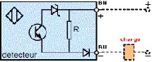 |
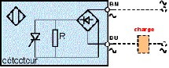 |
Charge alimenté en courant continu Charge alimenté en courant alternatif
Technique 3 fils :
Ce type de détecteur comporte un circuit électronique qui commande une ou plusieurs sorties statiques.
S'il ne comporte qu'une seule sortie statique, c'est un détecteur 3 fils sinon c'est un 4 fils (2 sorties statiques).
Il fonctionne uniquement en tension continue et peut être détecteur de type PNP ou NPN.
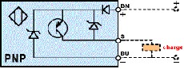 |
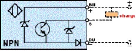 |
Schéma simplifié 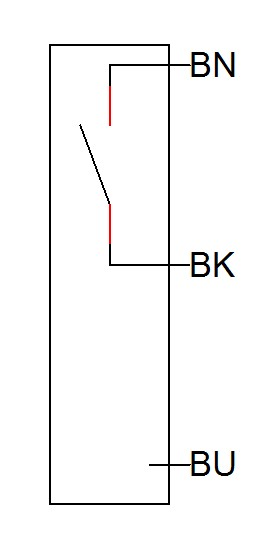 |
Schéma simplifié 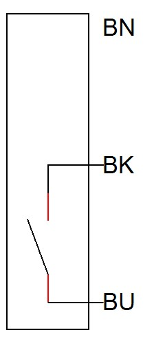 |
Le choix du type de sortie (PNP ou NPN) dépend de la logique d'entrée de l'automate sur lequel il est branché.
Principe (capteur de proximité ILS) 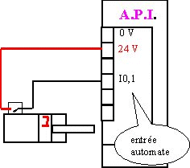 Exemple d'un automate à logique positive |
Principe (capteur photoélectrique Système proximité) 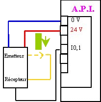 Exemple d'un automate à logique positive |
Schématisation (capteur de proximité ILS) 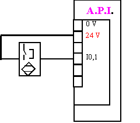 |
Schématisation (capteur photoélectrique Système proximité) 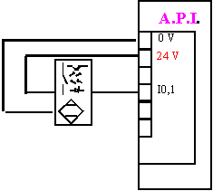 |
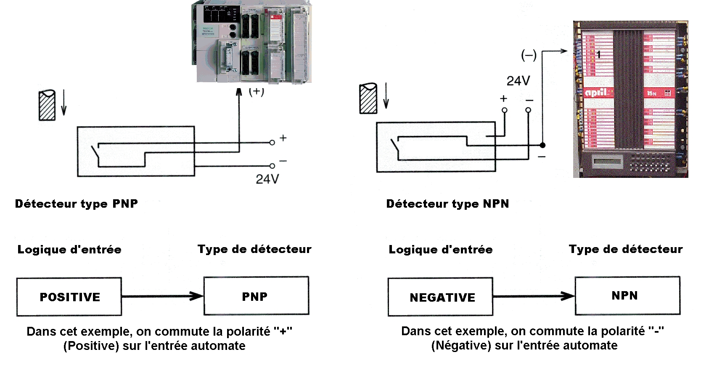
Créé avec HelpNDoc Personal Edition: Environnement de création d'aide complet